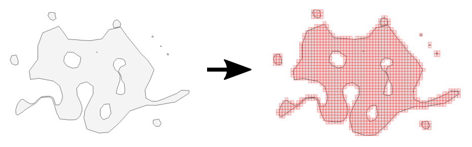
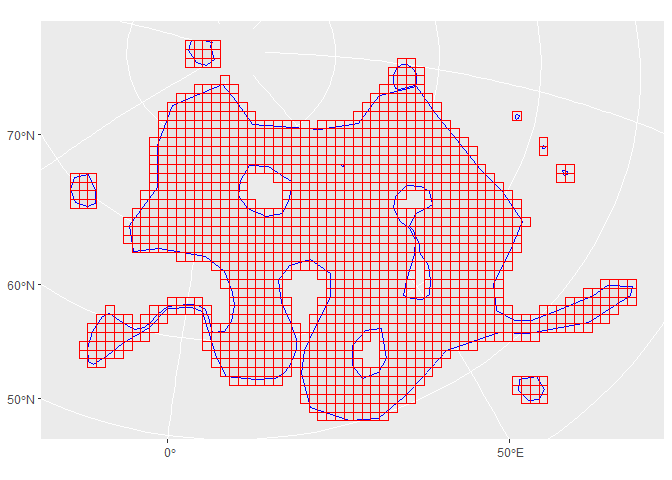

GridMaker produces vector GIS grid datasets of various resolutions covering user-defined countries or regions.

It is just the translation to R of the Eurostat GridMaker java utility that is used by Eurostat-GISCO for the production of gridded datasets
Installation
You can install the development version of GridMaker from GitHub with:
# install.packages("pak")
pak::pak("fgoerlich/GridMaker")Example
This is a basic example which shows you how to use the function:
library(ggplot2)
library(GridMaker)
region <- sf::read_sf(system.file("extdata/test_grid_area.gpkg", package = "GridMaker"))
grid <- GridMaker(region)
ggplot() +
geom_sf(data = region, col = "blue") +
geom_sf(data = grid, fill = NA, col = "red")